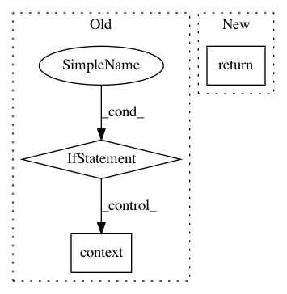

984130dd55ff3488ebfc4951ad4c3d8a88ed6793,tensorly/decomposition/candecomp_parafac.py,,initialize_kruskal,#Any#Any#Any#Any#Any#Any#Any#,18
Before Change
rng = check_random_state(random_state)
if init == "random":
factors = [tl.tensor(rng.random_sample((tensor.shape[i], rank)), **tl.context(tensor)) for i in range(tl.ndim(tensor))]
kt = KruskalTensor((None, factors))
elif init == "svd":
After Change
if init == "random":
// factors = [tl.tensor(rng.random_sample((tensor.shape[i], rank)), **tl.context(tensor)) for i in range(tl.ndim(tensor))]
// kt = KruskalTensor((None, factors))
return random_kruskal(tl.shape(tensor), rank, normalise_factors=False)
elif init == "svd":
try:
svd_fun = tl.SVD_FUNS[svd]
In pattern: SUPERPATTERN
Frequency: 3
Non-data size: 3
Instances
Project Name: tensorly/tensorly
Commit Name: 984130dd55ff3488ebfc4951ad4c3d8a88ed6793
Time: 2020-09-30
Author: jean.kossaifi@gmail.com
File Name: tensorly/decomposition/candecomp_parafac.py
Class Name:
Method Name: initialize_kruskal
Project Name: dmlc/dgl
Commit Name: 5d3f470b721db2a23dcc1a3880c1e31216e06233
Time: 2019-08-05
Author: expye@outlook.com
File Name: python/dgl/batched_graph.py
Class Name:
Method Name: _max_on
Project Name: tensorly/tensorly
Commit Name: 611c03b711a285d3cc2051969763b4c6fcd1a6a7
Time: 2020-09-30
Author: jean.kossaifi@gmail.com
File Name: tensorly/decomposition/candecomp_parafac.py
Class Name:
Method Name: initialize_kruskal